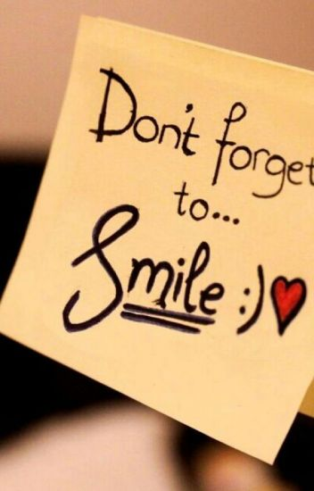

Ke pasar bersama ibu
Sorenya bersama ayah ke gasibu
Walaupun hari ini hari Rabu
Suasana hati jangan sampai kelabu

Sedikit pesan untuk hari ini
hehe
Perkenalkan, nama saya Grace Angelina Gunawan, biasa dipanggil gres
Lahir di Bandung, 19 Juli 2002.
Hobi saya mendengarkan musik.
Ini salah satu lagu yang paling sering saya dengarkan
UMake